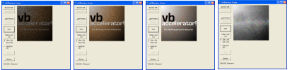

VB5 DIBSection Demonstration (110K)
VB5 DIBSection Demonstration (110K)
 VB6 DIBSection Demonstration (106K)
VB6 DIBSection Demonstration (106K)
 13 Jan 2003
13 Jan 2003
Cleaned up the sample and added a VB6 version, plus added a SavePicture method to natively save to a bitmap.

True Colour DIBSection
An Easy to Use Class for manipulating DIBSections plus a blindingly quick technique for updating the bits
This article describes in detail the DIB Section techniques used in the vbAccelerator Image Processor. It describes what DIB Sections are, how to use them and provides True Colour DIBSection class I wrote to wrap up the DIB Section.
What is a DIB Section?
A DIB (Device Independent Bitmap) Section is a GDI object like a standard DIB but which stores the actual bitmap data in memory which any Win32 application can access. This memory is provided to the creator as a pointer, and it allows ultimate flexibility if you want to modify the bits of a bitmap.
Using DIB Sections
A DIB section is created using the GDI CreateDIBSection call. You need to modify the declare provided for this in the VB API guide because this declare assumes you cannot use the pointer to the bitmap returned by the function and simply discards it. Here are the declares you need:
Private Type BITMAPINFOHEADER '40 bytes
biSize As Long
biWidth As Long
biHeight As Long
biPlanes As Integer
biBitCount As Integer
biCompression As Long
biSizeImage As Long
biXPelsPerMeter As Long
biYPelsPerMeter As Long
biClrUsed As Long
biClrImportant As Long
End Type
Private Type BITMAPINFO
bmiHeader As BITMAPINFOHEADER
bmiColors As RGBQUAD
End Type
' Note - this is not the declare in the API viewer - modify lplpVoid to be
' Byref so we get the pointer back:
Private Declare Function CreateDIBSection Lib "gdi32" _
(ByVal hdc As Long, _
pBitmapInfo As BITMAPINFO, _
ByVal un As Long, _
lplpVoid As Long, _
ByVal handle As Long, _
ByVal dw As Long) As Long
To create the DIB Section, you initialise a BITMAPINFO structure with the required fields, which are all in the bmiHeader sub-structure:
- biSize
Size of the BITMAPINFO structure - biWidth
Width of the DIBSection in pixels - biHeight
Height of the DIBSection in pixels - biPlanes
Number of colour planes. Set to 1 - biBitCount
Bits per pixel. Set to 24 for true colour. - biCompression
Whether to use compression. If you want to work on the bits, set this to BI_RGB so the image is uncompressed. - biSizeImage
The size of the image in bytes. This is worked out from the width, height, number of bits per pixel. In a 24 bit image there are three bytes per pixel. Additionally, GDI requires that every horizontal line in the image aligns on a four-byte boundary. So for a 24 bit image the ImageSize is biWidth*biHeight*3 rounded up to the nearest four bytes. You can round up to the width to the nearest four bytes as follows:(.biWidth * 3 + 3) And &HFFFFFFFC
This allows you to create a DIB Section. You call CreateDIBSection like this:
hDib = CreateDIBSection( _
lHDC, _
m_tBI, _
DIB_RGB_COLORS, _
m_lPtr, _
0, 0)
Where:
- hDib
is a variable to receive the GDI handle to the DIB Section. - lHDC
is a valid DC, for example a Form's DC or the desktop DC. - m_tBI
is a the BITMAPINFO structure. - m_lPtr
is a variable to receive the pointer to the memory containing the bitmap bits.
To actually display a DIB Section, you must select it into a DC.
m_hDC = CreateCompatibleDC(0)
If (m_hDC <> 0) Then
If (CreateDIB(m_hDC, lWidth, lHeight, m_hDIb)) Then
m_hBmpOld = SelectObject(m_hDC, m_hDIb)
Create = True
Else
DeleteObject m_hDC
m_hDC = 0
End If
End If
Once it is in a DC you can then use BitBlt to paint it to another device context or to transfer the contents of another device context into it. Remember you must keep track of all the handles created in GDI so you can clear them up again when the DIBSection is no longer needed. To clear up, you need to:
- Select the old bitmap (m_hBmpOld) back into the DC.
- Delete the DIB section.
- Delete the DC.
So far this has created a DIB which you can load with a graphic and display on the screen, but this achieves no more than you can do with a standard bitmap. The good stuff starts when you start modifying the bitmap bits.
Modifying the Bitmap Bits Directly
CreateDIBSection returns an address to the memory containing the bitmap. You can manipulate this directly through VB using a cool technique to make the memory look like a VB Byte array. This technique was originally presented in VBPJ article (although the original article is no longer easily available). It uses a hidden VB call exposed by the VB runtime (MSVBVM50.DLL for VB5 or MSVBVM60.DLL for VB6) and the ubiquitous CopyMemory call. In my opinion, "CopyMemory" is the best language feature in VB (except that it isn't VB at all!
Here are the declares you need:
Private Type SAFEARRAYBOUND
cElements As Long
lLbound As Long
End Type
Private Type SAFEARRAY2D
cDims As Integer
fFeatures As Integer
cbElements As Long
cLocks As Long
pvData As Long
Bounds(0 To 1) As SAFEARRAYBOUND
End Type
' Note for VB6, change the lib name to "msvbvm60.dll"
Private Declare Function VarPtrArray Lib "msvbvm50.dll" Alias "VarPtr" (Ptr() As Any) As Long
Private Declare Sub CopyMemory Lib "kernel32" Alias "RtlMoveMemory" ( _
lpvDest As Any, lpvSource As Any, ByVal cbCopy As Long)
To make the byte array point to the memory, you have to fill in the SAFEARRAY2D structure and then use CopyMemory as follows:
Dim tSA As SAFEARRAY2D
Dim bDib() As Byte
' Get the bits in the from DIB section:
With tSA
.cbElements = 1
.cDims = 2
.Bounds(0).lLbound = 0
' Height of the bitmap
.Bounds(0).cElements = m_tBI.bmiHeader.biHeight
.Bounds(1).lLbound = 0
' Width of the bitmap in bits (see earlier):
.Bounds(1).cElements = BytesPerScanLine()
.pvData = m_lPtr
End With
' Make the bDib() array point to the memory addresses:
CopyMemory ByVal VarPtrArray(bDib()), VarPtr(tSA), 4
Remember that doing this doesn't cause any of the memory to actually be copied, it just ensures that what VB sees as an array (in this case bDib()) acccess the memory at that pointer. This means that doing this is a very quick operation!
In this case the bDib() array is a two dimensional array with the first dimension being the x values and the second being the y values. A 24 bit DIB section is arranged so the bytes run Blue, Green, Red and remember that since the array is padded to a DWORD boundary there may be up to three unused bytes at the end of each row. So, for example, to set the top left pixel to purple you would write this:
bDib(0,0) = 255 ' Blue
bDib(1, 0) = 0 ' Green
bDib(2, y) = 255 ' Red
Once you have finished with the bDib array, you need to be sure to clear up the SAFEARRAY pointer you have created. If you fail to do this, your code will generally work but will crash NT4.0:
CopyMemory ByVal VarPtrArray(bDib), 0&, 4
Enough of That, I Want to Use It
That covers the theory of using DIB Sections. To make it easy, I include a self-contained class (cDibSection) which you can include. The methods and properties of this class are as follows:
- BytesPerScanLine
Returns the number of bytes horizontally, taking into account the bits per pixel and 4 byte boundary padding. - ClearUp
Frees up any GDI objects held by the class. Called automatically when the class terminates. - CopyToClipboard
Does as it says! - Create
Creates a DIB section of the specified width and height in pixels. - CreateFromPicture
Creates a DIB section the same size as a VB picture object and copies the bitmap in it into the DIB section. - DIBSectionBitsPtr
Returns the address of the DIBSection's bits in memory. - hdc
Returns the memory device context used by the class to hold the DIB Section. You can use this in GDI operations, but do not call DeleteObject or DeleteDC on it. - hDib
Returns a handle to the DIBSection held by the class. You can use this in GDI operations, but do not call DeleteObject on it. - Height
Returns the Height of the DIBSection in pixels. - LoadPictureBlt
Copies all or a part of a picture from another Device Context into the DIB section. - PaintPicture
Similar to the VB paint picture method, this copies all or part of the DIB section to another device context using the specified Raster Operation. - RandomiseBits
Randomises the pixels in the DIB Section, either to random colours or gray scaled. - Resample
Resizes the DIB using linear interpolation to create a smoother resized version than you would get if you used StretchBlt. - SavePicture
Saves the picture to a Bitmap file using native methods. - Width
Returns the width of the DIB in pixels.
A Simple Fade Example
This demonstrates how to fade out a bitmap. It should run as a real-time animation, provided the image size isn't too big. I've found that images which are too large don't show as a smooth animation even when the fade code runs quickly enough because BitBlt tends to "tear". This occurs because BitBlt doesn't completely display the bitmap during a single screen refresh and therefore the image is partially displayed before the refresh occurs. To get round this problem you need to use DirectX.
This sample is simplified version of the static and fade example in the download.
To try this sample, create a new project and add the cDIBSection class to it. Copy the declares for CopyMemory, VarPtrArray, SAFEARRAY2D and SAFEARRAYBOUND into the project's form, then add this sub:
Private Sub Fade( _
ByRef cTo As cDIBSection, _
ByVal lAmount As Long _
)
Dim bDib() As Byte
Dim x As Long, y As Long
Dim xMax As Long, yMax As Long
Dim lB As Long, lG As Long, lR As Long
Dim lA As Long, lA2 As Long
Dim lTIme As Long
Dim tSA As SAFEARRAY2D
' have the local matrix point to bitmap pixels
With tSA
.cbElements = 1
.cDims = 2
.Bounds(0).lLbound = 0
.Bounds(0).cElements = cTo.Height
.Bounds(1).lLbound = 0
.Bounds(1).cElements = cTo.BytesPerScanLine
.pvData = cTo.DIBSectionBitsPtr
End With
CopyMemory ByVal VarPtrArray(bDib), VarPtr(tSA), 4
yMax = cTo.Height - 1
xMax = cTo.Width - 1
For x = 0 To (xMax * 3) Step 3
For y = 0 To yMax
lB = lAmount * bDib(x, y) \ 255
lG = lAmount * bDib(x + 1, y) \ 255
lR = lAmount * bDib(x + 2, y) \ 255
bDib(x, y) = lB
bDib(x + 1, y) = lG
bDib(x + 2, y) = lR
Next y
Next x
CopyMemory ByVal VarPtrArray(bDib), 0&, 4
End Sub
Add a Command Button to the Form, and put this code behind it:
Private Sub Command1_Click()
Dim cDib As New cDibSection
Dim cDibBuffer as New cDibSection
Dim i As Long
' Load the picture to fade:
Set sPic = LoadPicture("Put Your File Here!")
cDib.CreateFromPicture sPic
' Create a copy of it:
cDibBuffer.Create cDib.Width, cDib.Height
cDib.PaintPicture cDibBuffer.HDC
' Fade Loop:
For i = 0 To 255 Step 4
' Fade the dib by amount i:
Fade cDib, i
' Draw it:
cDib.PaintPicture Form1.hDC
' Breathe a little. You may have to put a slowdown here:
DoEvents
' Reset for next fade:
cDibBuffer.PaintPicture cDib.HDC
Next i
End Sub
Now run the code. When you click the button, the image will be faded as fast as your system allows. The code will run slowly in the IDE but will go much much quicker if you compile it to native code. Also, checking all the Advanced Optimisation settings will make it run about 60% faster again! On my machine (PII 266 with 8Mb Xpert@Work card) it does 40fps when working on a 256x256 pixel image.